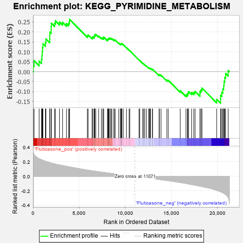
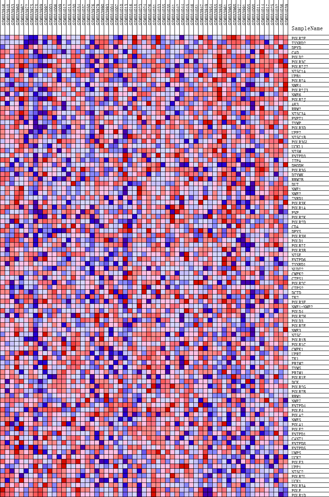
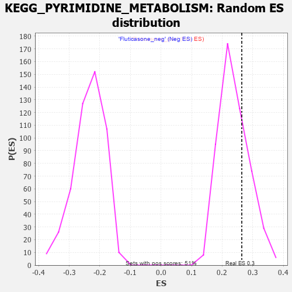

| | | Dataset | GSEA_expr_Flu.GSEA_timepoint.cls#Fluticasone |
| Phenotype | GSEA_timepoint.cls#Fluticasone |
| Upregulated in class | Fluticasone_pos |
| GeneSet | KEGG_PYRIMIDINE_METABOLISM |
| Enrichment Score (ES) | 0.26414636 |
| Normalized Enrichment Score (NES) | 1.107656 |
| Nominal p-value | 0.28290766 |
| FDR q-value | 1.0 |
| FWER p-Value | 0.967 |
Table: GSEA Results Summary

Fig 1: Enrichment plot: KEGG_PYRIMIDINE_METABOLISM
Profile of the Running ES Score & Positions of GeneSet Members on the Rank Ordered List
| PROBE | DESCRIPTION
(from dataset) | GENE SYMBOL | GENE_TITLE | RANK IN GENE LIST | RANK METRIC SCORE | RUNNING ES | CORE ENRICHMENT | | 1 | POLR2F | NA | | | 30 | 0.332 | 0.0303 | Yes |
| 2 | TXNRD2 | NA | | | 114 | 0.305 | 0.0554 | Yes |
| 3 | DPYD | NA | | | 659 | 0.244 | 0.0531 | Yes |
| 4 | CAD | NA | | | 916 | 0.229 | 0.0628 | Yes |
| 5 | POLD2 | NA | | | 969 | 0.226 | 0.0820 | Yes |
| 6 | POLR3C | NA | | | 998 | 0.225 | 0.1020 | Yes |
| 7 | POLR2J2 | NA | | | 1031 | 0.222 | 0.1217 | Yes |
| 8 | NT5C1A | NA | | | 1071 | 0.220 | 0.1409 | Yes |
| 9 | UPB1 | NA | | | 1343 | 0.208 | 0.1480 | Yes |
| 10 | POLR2A | NA | | | 1400 | 0.205 | 0.1649 | Yes |
| 11 | NME4 | NA | | | 1806 | 0.190 | 0.1639 | Yes |
| 12 | POLR2J3 | NA | | | 1816 | 0.190 | 0.1816 | Yes |
| 13 | NME6 | NA | | | 1821 | 0.190 | 0.1995 | Yes |
| 14 | POLR2J | NA | | | 1966 | 0.183 | 0.2102 | Yes |
| 15 | AK3 | NA | | | 1968 | 0.183 | 0.2276 | Yes |
| 16 | RRM2 | NA | | | 1992 | 0.183 | 0.2439 | Yes |
| 17 | NT5C3A | NA | | | 2345 | 0.172 | 0.2437 | Yes |
| 18 | PNPT1 | NA | | | 2424 | 0.170 | 0.2562 | Yes |
| 19 | TYMP | NA | | | 2869 | 0.157 | 0.2503 | Yes |
| 20 | POLR3D | NA | | | 3204 | 0.149 | 0.2487 | Yes |
| 21 | UPP2 | NA | | | 3626 | 0.138 | 0.2420 | Yes |
| 22 | NT5C1B | NA | | | 3857 | 0.133 | 0.2439 | Yes |
| 23 | POLR3GL | NA | | | 3945 | 0.131 | 0.2522 | Yes |
| 24 | UCKL1 | NA | | | 3957 | 0.130 | 0.2641 | Yes |
| 25 | NT5M | NA | | | 5898 | 0.087 | 0.1809 | No |
| 26 | ENTPD3 | NA | | | 5977 | 0.085 | 0.1854 | No |
| 27 | ITPA | NA | | | 6406 | 0.077 | 0.1725 | No |
| 28 | DHODH | NA | | | 6490 | 0.075 | 0.1757 | No |
| 29 | POLR3G | NA | | | 6628 | 0.073 | 0.1762 | No |
| 30 | DTYMK | NA | | | 6674 | 0.072 | 0.1809 | No |
| 31 | RRM2B | NA | | | 6703 | 0.071 | 0.1864 | No |
| 32 | DUT | NA | | | 6808 | 0.069 | 0.1881 | No |
| 33 | NME1 | NA | | | 7118 | 0.063 | 0.1796 | No |
| 34 | NME2 | NA | | | 7414 | 0.058 | 0.1712 | No |
| 35 | ZNRD1 | NA | | | 7564 | 0.056 | 0.1695 | No |
| 36 | POLR3K | NA | | | 7667 | 0.054 | 0.1698 | No |
| 37 | POLR1A | NA | | | 7672 | 0.054 | 0.1748 | No |
| 38 | PNP | NA | | | 8076 | 0.047 | 0.1602 | No |
| 39 | POLR2K | NA | | | 8127 | 0.046 | 0.1623 | No |
| 40 | POLR2D | NA | | | 8159 | 0.045 | 0.1651 | No |
| 41 | CDA | NA | | | 8208 | 0.045 | 0.1671 | No |
| 42 | DPYS | NA | | | 8241 | 0.044 | 0.1698 | No |
| 43 | POLR3H | NA | | | 8354 | 0.043 | 0.1686 | No |
| 44 | POLD1 | NA | | | 8468 | 0.041 | 0.1672 | No |
| 45 | POLR2I | NA | | | 8559 | 0.039 | 0.1667 | No |
| 46 | POLR3B | NA | | | 8755 | 0.036 | 0.1609 | No |
| 47 | NT5E | NA | | | 8866 | 0.034 | 0.1589 | No |
| 48 | ENTPD6 | NA | | | 8908 | 0.033 | 0.1602 | No |
| 49 | TXNRD1 | NA | | | 9302 | 0.027 | 0.1442 | No |
| 50 | NUDT2 | NA | | | 9477 | 0.024 | 0.1383 | No |
| 51 | CMPK2 | NA | | | 9489 | 0.024 | 0.1401 | No |
| 52 | CTPS1 | NA | | | 9576 | 0.023 | 0.1382 | No |
| 53 | POLR2C | NA | | | 9584 | 0.023 | 0.1400 | No |
| 54 | CTPS2 | NA | | | 9622 | 0.022 | 0.1403 | No |
| 55 | DCTD | NA | | | 9641 | 0.022 | 0.1415 | No |
| 56 | TK2 | NA | | | 9786 | 0.019 | 0.1366 | No |
| 57 | POLR3F | NA | | | 10142 | 0.014 | 0.1211 | No |
| 58 | NME1-NME2 | NA | | | 10432 | 0.009 | 0.1084 | No |
| 59 | POLD4 | NA | | | 10503 | 0.008 | 0.1058 | No |
| 60 | POLR2H | NA | | | 11503 | -0.007 | 0.0594 | No |
| 61 | POLD3 | NA | | | 11586 | -0.008 | 0.0563 | No |
| 62 | POLR2E | NA | | | 11902 | -0.013 | 0.0427 | No |
| 63 | NME3 | NA | | | 12008 | -0.014 | 0.0391 | No |
| 64 | NT5C | NA | | | 12126 | -0.017 | 0.0351 | No |
| 65 | POLR1B | NA | | | 12304 | -0.019 | 0.0287 | No |
| 66 | POLR1C | NA | | | 12536 | -0.023 | 0.0200 | No |
| 67 | CMPK1 | NA | | | 12642 | -0.025 | 0.0174 | No |
| 68 | UPRT | NA | | | 12693 | -0.026 | 0.0175 | No |
| 69 | TK1 | NA | | | 12761 | -0.027 | 0.0169 | No |
| 70 | PRIM2 | NA | | | 12953 | -0.031 | 0.0109 | No |
| 71 | TYMS | NA | | | 12980 | -0.031 | 0.0126 | No |
| 72 | PRIM1 | NA | | | 13680 | -0.043 | -0.0163 | No |
| 73 | POLR1E | NA | | | 13717 | -0.043 | -0.0139 | No |
| 74 | DCK | NA | | | 13891 | -0.046 | -0.0176 | No |
| 75 | POLR2G | NA | | | 14528 | -0.058 | -0.0421 | No |
| 76 | POLR2B | NA | | | 14678 | -0.060 | -0.0433 | No |
| 77 | RRM1 | NA | | | 15980 | -0.085 | -0.0965 | No |
| 78 | NME7 | NA | | | 16604 | -0.099 | -0.1165 | No |
| 79 | ENTPD4 | NA | | | 16756 | -0.102 | -0.1138 | No |
| 80 | POLE4 | NA | | | 16824 | -0.104 | -0.1071 | No |
| 81 | POLA2 | NA | | | 16883 | -0.105 | -0.0998 | No |
| 82 | NME5 | NA | | | 17220 | -0.114 | -0.1048 | No |
| 83 | POLA1 | NA | | | 17454 | -0.119 | -0.1045 | No |
| 84 | POLE2 | NA | | | 17590 | -0.122 | -0.0992 | No |
| 85 | ENTPD1 | NA | | | 18118 | -0.135 | -0.1112 | No |
| 86 | CANT1 | NA | | | 18126 | -0.135 | -0.0987 | No |
| 87 | ENTPD8 | NA | | | 18243 | -0.138 | -0.0910 | No |
| 88 | ENTPD5 | NA | | | 18343 | -0.141 | -0.0823 | No |
| 89 | UMPS | NA | | | 19937 | -0.192 | -0.1391 | No |
| 90 | UCK2 | NA | | | 20359 | -0.213 | -0.1386 | No |
| 91 | POLE3 | NA | | | 20368 | -0.213 | -0.1187 | No |
| 92 | UPP1 | NA | | | 20494 | -0.220 | -0.1036 | No |
| 93 | NT5C2 | NA | | | 20602 | -0.226 | -0.0871 | No |
| 94 | POLR2L | NA | | | 20695 | -0.233 | -0.0692 | No |
| 95 | UCK1 | NA | | | 20742 | -0.236 | -0.0488 | No |
| 96 | POLR3A | NA | | | 20819 | -0.243 | -0.0292 | No |
| 97 | POLE | NA | | | 20899 | -0.252 | -0.0089 | No |
| 98 | POLR1D | NA | | | 21181 | -0.295 | 0.0059 | No |
Table: GSEA details [plain text format]

Fig 2: KEGG_PYRIMIDINE_METABOLISM
Blue-Pink O' Gram in the Space of the Analyzed GeneSet

Fig 3: KEGG_PYRIMIDINE_METABOLISM: Random ES distribution
Gene set null distribution of ES for KEGG_PYRIMIDINE_METABOLISM